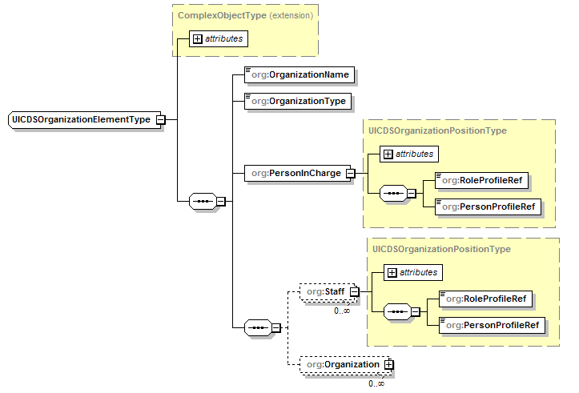

@Endpoint public class IncidentCommandServiceEndpoint extends Object implements com.saic.uicds.core.infrastructure.util.ServiceNamespaces
The Organizational Structure is defined as the following data structure:

Organizational structures for an incident are represented by building up hierarchies of instances of OrganizationalElements. Positions in the organizational structure are represented by an OrganizationPositionType. Positions contain a reference to a UICDS Resource Profile (role) and a UICDS Resource Instance (resource/person). The references should be the identifier of the resource profile or resource instance. Resource profiles are managed by the Resource Profile Service and resource instances are managed by the Resource Instance Service. The generic nature of the OrganizationalElement structure was chosen to provide the maximum flexibility for representing any type of organizational structure.
The Incident Command Service manages organizational structures for an incident as work products. The work product types are "ICS" (Incident Command Structures) or "MACS" (Multi-Agency Coordination Systems). An ICS work product type will be assigned if the role profile of the person in charge of the top level OrganizationElement starts with "Incident Commander" otherwise the work product type will be MACS.
NS_AgreementService, NS_AlertService, NS_BroadcastService, NS_DirectoryService, NS_IAPService, NS_Incident, NS_IncidentCommandStructureService, NS_IncidentManagementService, NS_InterestGroupService, NS_LEITSCService, NS_LoggingService, NS_MapService, NS_NotificationService, NS_OasisCAP, NS_ProfileService, NS_ResourceInstanceService, NS_ResourceManagementService, NS_ResourceProfileService, NS_SensorService, NS_TaskingService, NS_WorkProductService| Constructor and Description |
|---|
IncidentCommandServiceEndpoint() |
| Modifier and Type | Method and Description |
|---|---|
org.uicds.incidentCommandStructureService.CreateCommandStructureResponseDocument |
createCommandStructure(org.uicds.incidentCommandStructureService.CreateCommandStructureRequestDocument request)
Create an Incident Command Structure work product and optionally associate with an incident
by supplying the incident identifier (Interest Group identifier).
|
org.uicds.incidentCommandStructureService.GetCommandStructureResponseDocument |
getCommandStructure(org.uicds.incidentCommandStructureService.GetCommandStructureRequestDocument request)
Gets the Incident Command Structure work product that corresponds to the supplied
WorkProductIdentification in the request.
|
org.uicds.incidentCommandStructureService.GetCommandStructureByIncidentResponseDocument |
getCommandStructureByIncident(org.uicds.incidentCommandStructureService.GetCommandStructureByIncidentRequestDocument request)
Get the Incident Command Structure work product for a particular incident by supplying the
incident identifier (Interest Group identifier).
|
org.uicds.incidentCommandStructureService.UpdateCommandStructureResponseDocument |
updateCommandStructure(org.uicds.incidentCommandStructureService.UpdateCommandStructureRequestDocument request)
Update the Incident Command Structure work product and optionally associate it with incident
by supplying the incident identifier (Interest Group identifier).
|
@PayloadRoot(namespace="http://uicds.org/IncidentCommandStructureService",
localPart="GetCommandStructureByIncidentRequest")
public org.uicds.incidentCommandStructureService.GetCommandStructureByIncidentResponseDocument getCommandStructureByIncident(org.uicds.incidentCommandStructureService.GetCommandStructureByIncidentRequestDocument request)
GetCommandStructureByIncidentRequestDocument - @PayloadRoot(namespace="http://uicds.org/IncidentCommandStructureService",
localPart="GetCommandStructureRequest")
public org.uicds.incidentCommandStructureService.GetCommandStructureResponseDocument getCommandStructure(org.uicds.incidentCommandStructureService.GetCommandStructureRequestDocument request)
GetCommandStructureRequestDocument - @PayloadRoot(namespace="http://uicds.org/IncidentCommandStructureService",
localPart="CreateCommandStructureRequest")
public org.uicds.incidentCommandStructureService.CreateCommandStructureResponseDocument createCommandStructure(org.uicds.incidentCommandStructureService.CreateCommandStructureRequestDocument request)
CreateCommandStructureRequestDocument - @PayloadRoot(namespace="http://uicds.org/IncidentCommandStructureService",
localPart="UpdateCommandStructureRequest")
public org.uicds.incidentCommandStructureService.UpdateCommandStructureResponseDocument updateCommandStructure(org.uicds.incidentCommandStructureService.UpdateCommandStructureRequestDocument request)
UpdateCommandStructureRequestDocument - Copyright © 2012. All Rights Reserved.